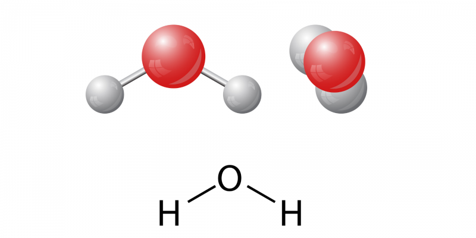

COMPOSICIÓN DEL AGUA
Esta distribución de sus átomos y el alto valor de electronegatividad del átomo de oxígeno generan la formación de un dipolo eléctrico que determina la polaridad del agua.
Se considera que el agua es el solvente universal, pues la mayoría de las sustancias pueden disolverse en agua. Estas sustancias, llamadas “hidrófilas”, son polares. Por otra parte, las sustancias no polares (apolares), como el aceite o la gasolina, son llamadas “hidrófobas” y no se disuelven en agua.
Además, el agua es un gran conductor de electricidad y también puede retener y almacenar calor.
Causas de la contaminación del agua
La contaminación del agua puede proceder de diversas fuentes. Puede penetrar en el agua directamente, a través de vertidos legales e ilegales de fábricas, por ejemplo, o de plantas de tratamiento de aguas imperfectas. Los vertidos y las fugas de los oleoductos o las operaciones de fracturación hidráulica (fracking) pueden degradar los suministros de agua. El viento, las tormentas y el vertido de basura -especialmente de residuos plásticos- también pueden enviar desechos a las vías fluviales.
Gracias en gran medida a décadas de regulación y acciones legales contra los grandes contaminadores, la principal causa de los problemas de calidad del agua en EE. UU. es ahora la "contaminación de fuentes no puntuales", cuando los contaminantes son transportados a través del suelo por la lluvia o la nieve derretida. Esta escorrentía puede contener fertilizantes, pesticidas y herbicidas procedentes de granjas y hogares; petróleo y productos químicos tóxicos provenientes de carreteras e industrias; sedimentos; bacterias originarias del ganado; residuos de animales domésticos y otros contaminantes. Este es un problema que se repite en todo el mundo, siendo un buen ejemplo la contaminación del Mar Menor en Murcia.
Por último, la contaminación del agua potable puede producirse a través de las propias tuberías si el agua no se trata adecuadamente, como ocurrió en el caso de la contaminación por plomo en Flint (Michigan; Estados Unidos) y otras ciudades. Otro contaminante del agua potable, el arsénico, puede proceder de depósitos naturales, pero también de residuos industriales.
